遠方的孩子
今天總騎的里程不會超過五十公里，是個輕鬆愜意的一天，所以不急著那麼早出發。
從落腳的地方到酒泉約是25公里，算好時間，打算抵達酒泉的時候正好可以吃午餐。
吃飽後休息一下，接著往又是距離25公里遠的嘉峪關騎，下午三點之前就可以找旅館休息了。
真是個美好的一天～
今天好像東南部地區都是大雨到暴雨的特報，從北京一路往南，鄭州一路往西到蘭州，通通都在警報範圍內。
真是好加在這些地區我已經騎完了，不然今天看是要望雨興嘆，還是冒雨上路？
往酒泉的路上，到處都飄著像是棉絮的東西，是從很多種在道路兩旁的大樹上吹落的，
大風一直吹，白白的棉絮就到處飄，不是被我吸到鼻子裡，就是吃到嘴巴裡，不然就是繞過眼鏡跑到眼睛裡...
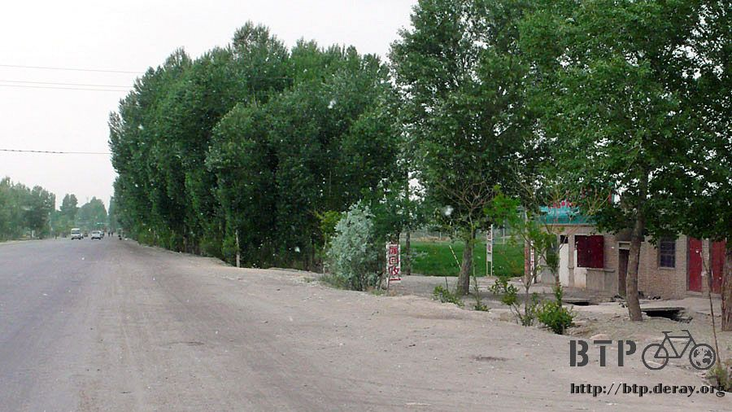
如預料中的，在中午十二點整抵達酒泉，天氣依舊陰涼，太陽在厚重的雲層後面。
一丁點的雨，時而落下時而停止，大片的烏雲則被強風往東南方吹去。
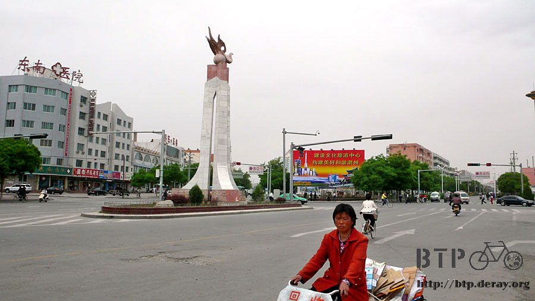
酒泉的路上都是被風吹落的花瓣，好一個浪漫的地方。

我的午餐在這裡吃了一碗刀削麵，價錢從貴到便宜依序分有加工的、大碗的和小碗的，
沒吃過什麼是加工的，所以就點點看，上桌之後發現大概加肉就是所謂的加工吧。
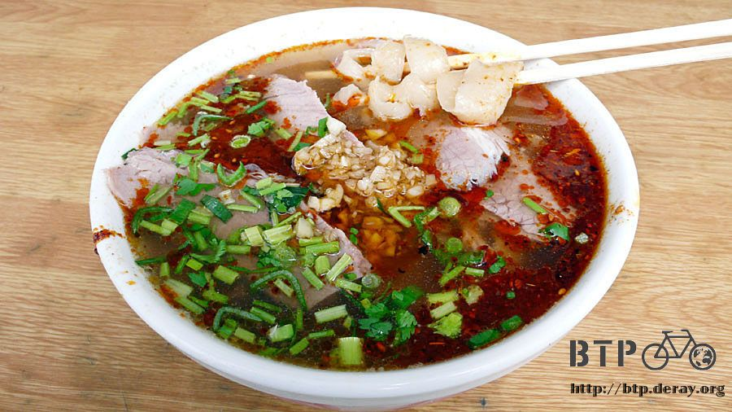
這個就是我常說的，客人都放下碗筷跑出來看小多的情形，等我拍完這張照之後，
收起相機，又要開始回答一堆好奇的問題。~_~
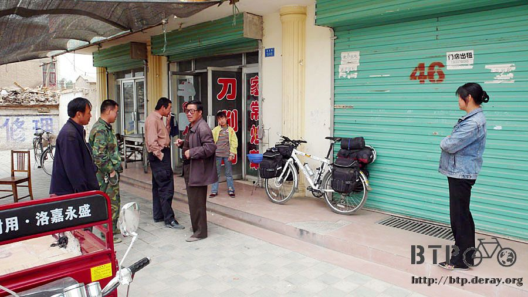
吃飽之後，到隔壁的商店補充郊遊的零食，我要一路郊遊到烏魯木齊去～估計還有一千八百公里遠。
買了一大包的蝦味仙、六塊沙琪瑪和一包仙楂餅，花了6.5元。
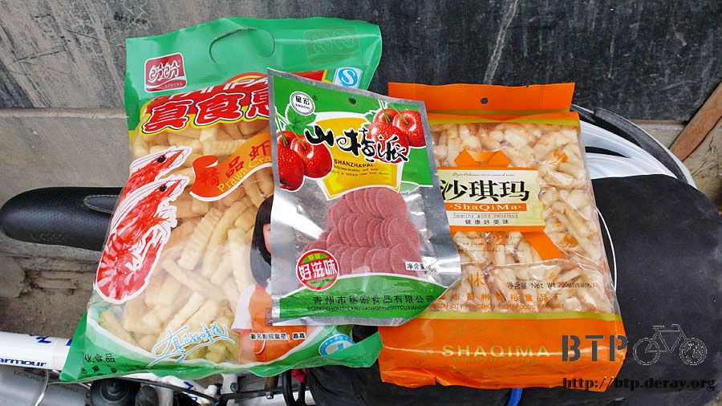
邊吃仙楂餅邊往嘉峪關騎，看到這告示牌，除了說明嘉峪關很近之外，原來我已經離開蘭州這麼遠了...

就算今天吹逆風也沒關係，本來應該是枝垂葉擺的樹，都被強風吹得又盪又甩的。

就算路上下點小雨也沒關係，昨天看氣象說乾旱那麼嚴重，難得可以下點雨是好事。
而且雨很小，根本不需要穿雨衣，稍微淋一下就會停的。
(上次在山裡我也是這樣想，結果就被淋成落湯雞~_~)
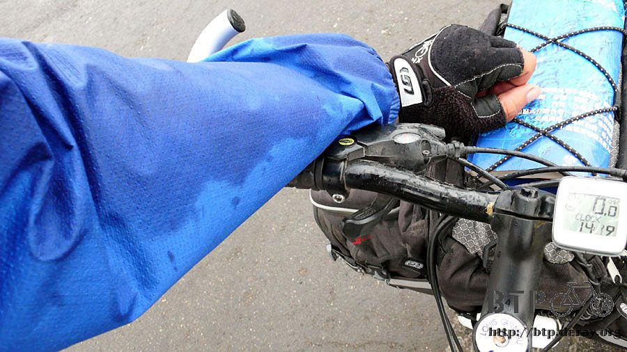
『星星峽』是甘肅通往新疆的一個分界點，光是聽名字就覺得很美，我也計畫要在星星峽住一個晚上，
可是為什麼這個告示牌是寫『猩猩峽』呢？=..= 這樣就差很多了，我可不想在很多猩猩的地方多停留。
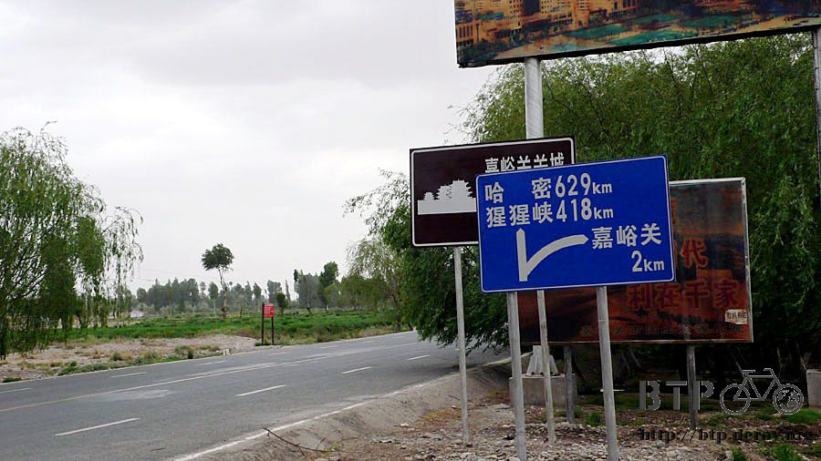
下午兩點半就到嘉峪關了，今天準備收工！
都還沒暖身就要收工了，萬歲萬歲萬萬歲～！
邊騎車邊找旅館，邊向對我有興趣的人問路，長城要往哪邊走？騎自行車可以過去嗎？
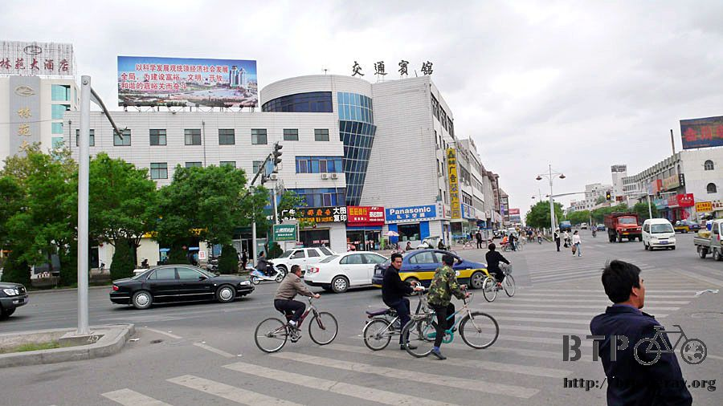
嘉峪關是萬里長城在西邊的終點，在很多年以前這邊是軍事國防的要塞，而一出嘉峪關，就是所謂的塞外了。
明天打算騎著小多去看萬里長城，就算到過門口也好，到中國沒看到長城好像少了點什麼的感覺。
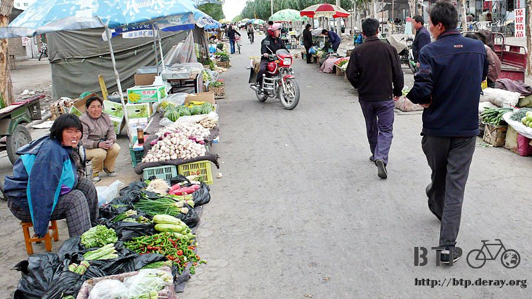
找旅館的時候，騎到菜市場裡面，然後發現一間旅館。，一晚上15元

這條菜市場有很多商店和餐廳可以讓我吃飯兼補給，走出菜市場就是大馬路，網吧也很近，住這邊是很方便的。
自己睡一間超級迷你的單人房，老闆說車子可以放在院子裡，但我堅持要跟小多一起睡，
超小的房間加上我一堆的行李和小多，就擠得不像話了，得挪一下東西門才可以打開或是關起來。

一找到住宿點之後，我第一都會問哪裡可以讓我洗衣服，第二則是問衛生間在哪，第三就是拿一壺熱水瓶。
看到我這身行頭加上單車，大家都會問我是哪來的，旅館的老闆當然也不例外。
我說我是西安來的，先騎到蘭州再騎到這裡，再來要騎去新疆了。
老闆的表情突然有一點落寞，可我搞不懂是怎麼回事，也不多問了。
先換上睡衣，抱著穿了兩天的衣服準備要去洗手台動手洗乾淨。
老闆說，既然有這麼多件要洗，那他就用洗衣機給我洗吧。
哇塞！洗衣機耶！
雖然只是一個超級古董，衣服和洗衣粉放進去之後，要自己用臉盆裝水倒進裡面，但真的會洗衣服。
我把衣服放進去，正要回房間拿洗衣粉的時候，老闆就先幫我加好了。
我一邊倒水進去洗衣機，老闆一邊說他的兒子也在西安念書。
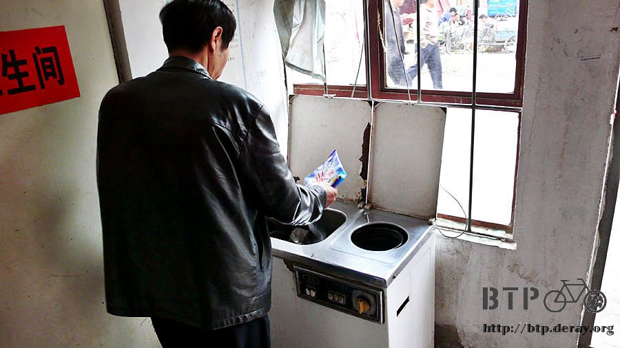
『喔？念哪一間呀？』因為我現在是假西安人，所以要裝熟一點。
『西進大學，念化工的。』慢慢抽著煙的老闆，往外頭吐了一口煙，表情依舊是那樣的落寞，
老闆的兒子小我四歲，雖然他沒多說什麼，但是可以感覺得出來兒子去念書之後，一定很少回家吧。
這種落寞的神情，應該就是聽到我從西安來，年紀又和兒子相仿，所以思念得心疼吧....
想起我在西安的網吧上網的時候，一個坐我隔壁的年輕人，用視訊跟網友聊天，
他說他跟他老頭吵架，很不爽，所以接下來一整年他都不要回家了，要氣死他老頭。
雖然那個網吧中的年輕人跟這間旅館的老闆是父子的機率只有幾億分之一。
但是如果這間旅館的孩子看到爸爸這寂寞的背影的話，放假的時候記得回酒泉來看看家人呀。
衣服在洗衣機裡轉了幾分鐘之後，水又變成拖過地的那樣髒。
用大臉盆裝一半的水，把洗衣機中的衣服撈出來手動洗清，然後扭乾一下再放到脫水機中。
脫完水就可以拿去曬啦～有洗衣機代勞真是輕鬆很多，這樣又有乾淨的衣服可以穿了。

洗完衣服也擦完澡之後，就去菜市場街逛逛看有什麼可以買的。
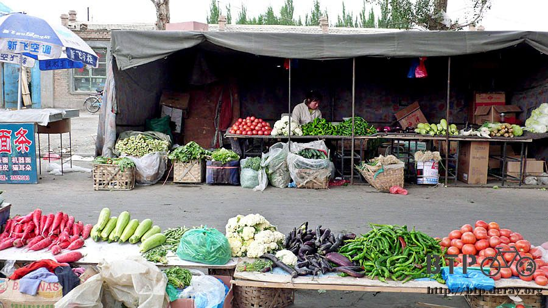
繼續在超市補充郊遊的零食，這次買了四包牛奶，兩包原味、一包花生、一包麥芽，和兩包花生米(高熱量，吃這個體力好)
和一個我沒想過自己會買的東西，桃子罐頭，本來只是好奇的問一下多少錢？
一瓶七塊倒不算太貴，因為很大一罐，看起來好像還蠻好吃的樣子，
因為老闆娘說了一句話，所以我就打算買了，她說這個桃子吃完了，玻璃罐子還可以拿來當水壺。
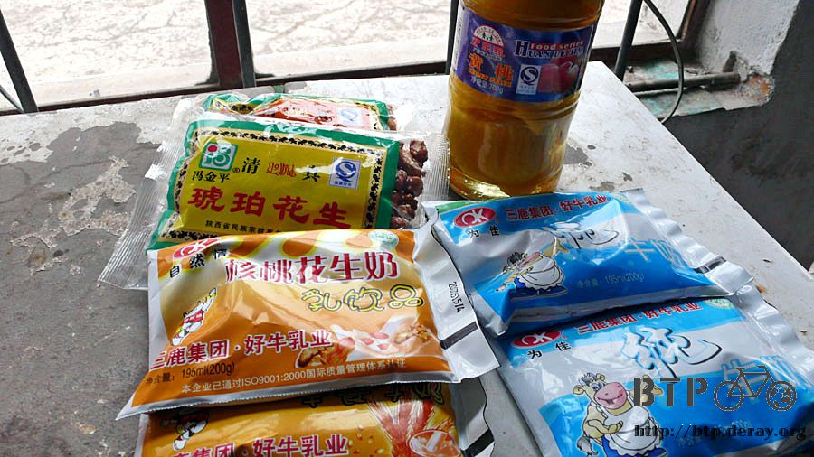
但是我已經有水壺啦，可是多虧老闆娘的一句話，讓我想到這個罐子可以拿來裝別的東西，所以就買了。
走回旅館的路上，雨就滂沱而下，不像剛剛那樣秀氣的慢慢滴，
好加在今天已經休息了，要是還在路上，那準變成落湯雞。
快步跑回旅館裡，吃著餅乾零食和桃子罐頭，躺在床上整理遊記一不小心就會想睡覺。
也許我真的該好好睡一場大頭覺，空白一整天啥事也不要做，這樣也不錯～
晚餐時刻就到菜市場街上去，本來都是賣菜的攤子，到了晚上就變成小吃夜市街。
看到一種很像是鹽酥雞，但是只有一個炒菜鍋大小的鍋子，裡面有黑黑的油在炸東西。
不論什麼一根都是五毛錢，我選了兩根臭豆腐、兩根炸番薯丸子和一根炸小香腸。
從黑黑的油中炸好之後，會在塗上鹹鹹辣辣的醬汁，喜歡的話要指定加醋也可以。
一個連椅子都沒有的小攤子，老闆還會問你要帶走還是這邊吃？
如果選擇這邊吃的話，老闆就會把炸好塗上佐料的食物放在小盤子上，然後就站著吃。
邊吃邊看他賣的東西，從炸青椒到炸大餅都有，味道還算不錯，不知道這算是地方小吃還是一般小吃。
吃著奇怪的鹽酥雞，繼續逛夜市，在熟肉滷味攤買了一隻豬耳朵，秤過重之後只要四塊二。
還可以請他們現切成片，然後加上蔥花、蒜泥、香料和調味料攪拌，等等就可以當配影集的點心吃。
夜市的餐廳，八成以上都是賣清真的羊肉串燒，勢力非常的龐大，快到塞外風情了嗎？
繼續閱讀：5.23 懸壁長城
中國-人民幣－ 1：4.3 台幣
5.22 |
總計：50.2元 |
午餐加工刀削麵6元、雜貨店蝦味先、仙楂餅、沙琪瑪6.5元、冰棒兩支1元、住店15元、雜貨店牛奶四包4元、花生兩包4元、桃子罐頭7元、晚餐奇怪鹽酥雞2.5元、滷豬耳朵4.2元 |
|